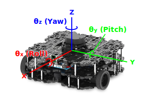

Part 2: Odometry & Navigation
Introduction¶
Exercises: X
Estimated Completion Time: Y hours
Aims¶
In Part 2 you will learn how to control a ROS robot's position and velocity from both the command line and through ROS Nodes. You will also learn how to interpret the data that allows us to monitor a robot's position in its physical environment (odometry). The things you will learn here form the basis for all robot navigation in ROS, from simple open-loop methods to more advanced closed-loop control (both of which you will explore).
Intended Learning Outcomes¶
By the end of this session you will be able to:
- Interpret the Odometry data published by a ROS Robot and identify the parts of these messages that are relevant to a 2-wheeled differential drive robot (such as the TurtleBot3).
- Develop Python nodes to obtain Odometry messages from an active ROS network and translate them to provide useful information about a robot's pose in a convenient, human-readable way.
- Implement open-loop velocity control of a robot using ROS command-line tools.
- Develop Python nodes that use open-loop velocity control methods to make a robot follow a pre-defined motion path.
- Combine both publisher & subscriber communication methods into a single Python node to implement closed-loop (odometry-based) velocity control of a robot.
- Explain the limitations of Odometry-based motion control methods.
Getting Started¶
TODO:
Step 1: Launch your ROS Environment
If you haven't done so already, launch your ROS environment now:
- OPTION 1
- OPTION 2
- etc...
You should now have access to ROS via a Linux terminal instance. We'll refer to this terminal instance as TERMINAL 1.
Step 2: Make Sure The Course Repo is Up-To-Date
In Part 1 you should have downloaded and installed The Course Repo into your ROS environment. If you haven't done this yet then go back and do it now. If you have already done it, then it's worth just making sure it's all up-to-date, so run the following command now to do so:
TERMINAL 1:
Then build with Colcon:
And finally, re-source your environment:
Warning
If you have any other terminal instances open, then you'll need run source ~/.bashrc in these too, in order for any changes made by the Colcon build process to propagate through to these as well.
Step 3: Launch a Waffle Simulation
In TERMINAL 1 enter the following command to launch a simulation of a TurtleBot3 Waffle in an empty world:
TERMINAL 1:
A Gazebo simulation window should open and within this you should see a TurtleBot3 Waffle in empty space:

You're all set up and ready to go!
Position and Velocity¶
Two types of Velocity Command can be issued to any ROS Robot to make it move (and thus change its position):
- Linear Velocity: The velocity at which the robot moves forwards or backwards in one of its principal axes.
- Angular Velocity: The velocity at which the robot rotates about one of its principal axes.
Principal Axes¶
The motion (i.e. the velocity) of any mobile robot can be defined in terms of three principal axes: X, Y and Z. In the context of our TurtleBot3 Waffle, these axes (and the motion about them) are as follows:

In theory then, a robot can move linearly or angularly about any of these three axes, as shown by the arrows in the figure. That's six Degrees of Freedom (DOFs) in total, achieved based on a robot's design and the actuators it is equipped with.
Our TurtleBot3 Waffles, however, only have two motors, so they don't actually have six DOFs! These two motors can be controlled independently, which is known as a "differential drive" configuration, and ultimately provides it with a total of two degrees of freedom in total, as illustrated below.

It can therefore only move linearly in the x-axis (Forwards/Backwards) and angularly in the z-axis (Yaw).
It's also worth noting (while we're on the subject of motion) that our TurtleBot3 Waffles have maximum velocity limits:
| Velocity Component | Upper Limit | Units |
|---|---|---|
| Linear | 0.26 | m/s |
| Angular | 1.82 | rad/s |
ROS Velocity Commands¶
In Part 1 you learnt about ROS Topics, and about how the teleop_keyboard node could be used to publish messages to a particular topic in order to control the velocity of the robot (and thus make it move around).
Questions
- Which topic is used to control the velocity of the robot?
- What message type does this topic use?
In Part 1 you also learnt how to find out more about this particular message type, using the ros2 interface show command:
$ ros2 interface show geometry_msgs/msg/Twist
# This expresses velocity in free space broken into its linear and angular parts.
Vector3 linear
float64 x
float64 y
float64 z
Vector3 angular
float64 x
float64 y
float64 z
There are six "fields" that we can assign values to here:
linear:x,y&zangular:x,y&z
These relate to a robot's six degrees of freedom (about its three principal axes), as we discussed above. These topic messages are therefore formatted to give a ROS Programmer the ability to ask a robot to move in any one of its six DOFs.
Vector3 linear
float64 x <-- Forwards (or Backwards)
float64 y <-- Left (or Right)
float64 z <-- Up (or Down)
Vector3 angular
float64 x <-- Roll
float64 y <-- Pitch
float64 z <-- Yaw
As we also learnt above though, our Waffle Robots can only actually move with linear velocity in the x-axis and angular velocity in the z-axis. As a result then, only velocity commands issued to the linear.x (Forwards/Backwards) or angular.z (Yaw) parts of this message will have any effect.
Robot Odometry¶
Let's take another look at all the topics that can be used to communicate with our robot:
Another topic of interest here is /odom. This topic contains Odometry data, which is also essential for robot navigation, giving us an approximation of a robot's location in its environment.
What is Odometry?¶
We can learn more about Odometry data in ROS by using some of the same key ROS command line tools that we have already used previously (just applied to a different topic or message):
TERMINAL 2:
This provides information about the type of message used by this topic:
We can find out more about this message using the ros2 interface show command:
TERMINAL 2:
The output of this is quite complicated, but - to start with - we can look down the far left-hand side to identify the four base fields of the message (i.e. the fields that are not indented):
| # | Field Name | Field Type |
|---|---|---|
| 1 | header |
std_msgs/Header |
| 2 | child_frame_id |
string |
| 3 | pose |
geometry_msgs/PoseWithCovariance |
| 4 | twist |
geometry_msgs/TwistWithCovariance |
We won't worry to much about the first two, it's Items 3 and 4 that are of most interest to us...
Pose¶
# Estimated pose that is typically relative to a fixed world frame.
geometry_msgs/PoseWithCovariance pose
Pose pose
Point position
float64 x
float64 y
float64 z
Quaternion orientation
float64 x
float64 y
float64 z
float64 w
float64[36] covariance
Pose tells us the position and orientation of our robot relative to an arbitrary reference point (typically where the robot was when it was turned on). The pose is determined from:
- Data from the Inertial Measurement Unit (IMU) on the OpenCR board
- Data from both the left and right wheel encoders
- A kinematic model of the robot
All the above information can then be used to calculate (and keep track of) the distance travelled by the robot from its pre-defined reference point (using a process called dead-reckoning).
Position data is important for determining the movement of our robot, and from this we can estimate its location in 3-dimensional space. This is expressed in units of meters.
Orientation is expressed in units of Quaternions, which is a mathematically convenient way to store data related to a robot's orientation, but it's a bit hard for us humans to understand and visualise1.
Quaternions use four values to represent the orientation of something in 3 dimensional space, as we can observe from the structure of the nav_msgs/msg/Odometry ROS message:
For us, it's easier to think about the orientation of our robot in a Euler Angle representation, which tell us the degree of rotation about the three principal axes (as discussed above):
θx, aka: "Roll"θy, aka: "Pitch"θz, aka: "Yaw"
Fortunately, the maths involved in converting between these two orientation formats is fairly straight forward.
Recall from earlier however, that our TurtleBot3 can only move in a 2D plane and so, actually, its pose can be fully represented by just 3 terms: x, y & θz, where x and y are the 2D coordinates of the robot in the X-Y plane, and θz is the angle of the robot about the z (yaw) axis.
Twist¶
Twist tells us the current linear and angular velocities of the robot, and this data comes directly from the wheel encoders.
Once again, all of this data is defined in terms of the principal axes, as illustrated in the figure above.
Exercise 1: Exploring Odometry Data¶
-
In TERMINAL 2 launch
rqt:
TERMINAL 2:
-
From the top menu select
Plugins>Topics>Topic MonitorTopic Monitor should then present you with a list of active topics which matches the topic list from the
ros2 topic listcommand that you ran earlier. -
Check the box next to
/odomand click the arrow next to it to expand the topic and reveal the four base fields that we talked about earlier. -
Next, expand the
pose>pose>positionandorientationfields to reveal the data being published to the three position and four orientation values of this message. -
Also expand the
twist>twist,linearandangularfields to reveal the six values being published here too.
-
Next, launch a new terminal instance, we'll call this one TERMINAL 3. Arrange this next to the
rqtwindow, so that you can see them both simultaneously. -
In TERMINAL 3 launch the
teleop_keyboardnode as you did last time (TODO: link to part 1):
TERMINAL 3:
-
Enter A a couple of times to make the robot rotate on the spot. Observe how the odometry data changes in the Topic Monitor.
Questions
- Which
posefields are changing? - Is there anything in the
twistpart of the message that corresponds to theangular velocitythat is being published by theteleop_keyboardnode in TERMINAL 3?
- Which
-
Now press the S key to halt the robot, then press W a couple of times to make the robot drive forwards.
Questions
- Which
posefields are changing now? How does this relate to the position of the robot in the simulated world? - How does the
twistpart of the message now correspond to thelinear velocitysetting in TERMINAL 3?
- Which
-
Now press D a couple of times and your robot should start to move in a circle.
Questions
- What linear and angular velocities are you requesting in TERMINAL 3, and how are these represented in the
twistpart of the/odommessage? - What about the
posepart of the message? How is this data changing as your robot moves in a circular path. - What are
twistandposeactually telling us?
- What linear and angular velocities are you requesting in TERMINAL 3, and how are these represented in the
-
Press S in TERMINAL 3 to stop the robot (but leave the
teleop_keyboardnode running). Then, press Ctrl+C in TERMINAL 2 to close downrqt. -
Let's look at the Odometry data in a different way now. With the robot stationary, use
ros2 runto run a Python node that we have created to illustrate just theposedata, and how it relates to the robot's position and orientation in its environment:
TERMINAL 2:
-
Now (using the
teleop_keyboardnode in TERMINAL 3) drive your robot around again, keeping an eye on the outputs that are being printed by therobot_posenode in TERMINAL 2 as you do so.The output of the
robot_posenode shows you how the robot's position and orientation (i.e. "pose") are changing in real-time as you move the robot around. The"initial"column tells us the robot's pose when the node was first launched, and the"current"column show us what its pose currently is. The"delta"column then shows the difference between the two.Question
Which pose parameters haven't changed, and is this what you would expect (considering the robot's principal axes, as illustrated above)?
-
Press Ctrl+C in TERMINAL 2 and TERMINAL 3, to stop the
robot_poseandteleop_keyboardnodes.
Exercise 2: Creating a Python node to process Odometry data¶
In Part 1 you learnt how to create a package and build simple nodes in Python to publish and subscribe to messages on a topic. In this exercise you will build a new subscriber node, much like you did in the previous session, but this one will subscribe to the /odom topic that we've been talking about above. You'll also create a new package called part2_navigation for this node to live in!
-
First, make sure you are in the
srcfolder of theros2_wsin your terminal: -
Next, use the
ros2 pkgtool to create your package: -
Then navigate into the
ros2_ws/src/part2_navigation/part2_navigationfolder using thecdcommand again. For Python packages, this is where all executables (i.e. Python files) should be located.The subscriber that we will build here will be structured in much the same way as the subscriber that we built in Part 1. The difference now though is that this one will subscribe to the
(TODO: update to "main" once available)/odomtopic (instead of/chatter(TODO: confirm topic message in Part 1)), and its callback function will therefore receiveOdometrytype messages (instead ofString(TODO: confirm)), so we'll have to deal with those a bit differently. We've created a template for this to help you to get started. Download this from GitHub using thewgetcommand: -
Next, add some dependencies to your package's
package.xmlfile, above the<test_depend>lines that should already be there: -
Then open up the
setup.pyfile and add an entry point for theodom_subscribernode: -
Finally, head back to the terminal and use Colon to build your new package and it's executable:
-
Now we're ready to run this! Do so using
ros2 runand see what it does: -
Have a think about what's different between this and the subscriber from last time...
In the Subscriber from Part 1 we were working with a
Stringtype message from thestd_msgspackage, whereas this time we're using anOdometrymessage from thenav_msgspackage instead - notice how the imports and the callback function have changed as a result of this. -
You need to add some additional code to the callback function now:
- The node needs to print the robot's real-time odometry data to the terminal in the form:
(x,y,θz). - The format of the message has already been structured for you, but you need to add in the relevant variables that represent the correct elements of the robot's real-time pose.
- You'll need to use the
euler_from_quaternionfunction (defined within the script) to convert the raw orientation values from Quaternions into Radians. If you need a hint, why not have a look back at this bit from earlier, or at the source code for therobot_pose.pynode that we launched from thetuos_examplespackage in the previous exercise.
- The node needs to print the robot's real-time odometry data to the terminal in the form:
-
Observe how the output (the formatted odometry data) changes whilst you move the robot around using the
teleop_keyboardnode in a new terminal instance (TERMINAL 3). - Stop your
odom_subscriber.pynode in TERMINAL 2 and theteleop_keyboardnode in TERMINAL 3 by entering Ctrl+C in each of the terminals.
Basic Navigation: Open-loop Velocity Control¶
Exercise 3: Velocity Control from a Terminal¶
Warning
Make sure that you've stopped the teleop_keyboard node before starting this exercise!
We can use the ros2 topic pub command to publish data to a topic from a terminal by using the command in the following way:
As we discovered earlier, the /cmd_vel topic is expecting messages containing linear and angular velocity data, each with an x, y and z component. When publishing topic messages in a terminal the commands can get quite long and complicated, but we can use autocomplete functionality to help us format the full command correctly. In TERMINAL 3 type the following, using the Tab key where indicated to invoke autocompletion...
TERMINAL 3:
First, press Tab to complete the topic name for you:
Then, press Tab to format the message type correctly:
Finally, press Tab again to obtain the format of the message data:
The full command will then be presented:
ros2 topic pub /cmd_vel geometry_msgs/msg/Twist "linear:
x: 0.0
y: 0.0
z: 0.0
angular:
x: 0.0
y: 0.0
z: 0.0"
Tip
You can use Tab to autocomplete lots of terminal commands, experiment with it - it'll save you lots of time!
-
Scroll back through the message using the Left key on your keyboard and then edit the values of the various parameters, as appropriate. First, define some values that would make the robot rotate on the spot.
-
Enter Ctrl+C in TERMINAL 3 to stop the message from being published.
Warning
What happens to the robot when you stop the
ros2 topic pubcommand?... it keeps on moving at the requested velocity!
In order to make the robot actually stop, we need to publish a new message containing alternative velocity commands.
-
In TERMINAL 3 press the Up key on your keyboard to recall the previous command, but don't press Enter just yet! Now press the Left key to track back through the message and change the velocity values in order to now make the robot stop.
-
Once again, enter Ctrl+C in TERMINAL 3 to stop the publisher from actively publishing new messages, and then follow the same steps as above to compose another new message to now make the robot move in a circle.
-
Enter Ctrl+C to again stop the message from being published, publish a further new message to stop the robot, and then compose (and publish) a message that would make the robot drive in a straight line.
-
Finally, stop the robot again!
Exercise 4: Creating a Python node to make the robot move in a circle¶
You will now learn how to control the velocity of the robot through a Python Node. In Pat 1 you built a simple publisher node, and this one will effectively be the same thing, this time however, we need to publish Twist type messages to the /cmd_vel topic instead...
In TERMINAL 2, ensure that you're located within the scripts folder of your part2_navigation package (you could use pwd to check your current working directory).
If you aren't located here then navigate to this directory using cd.
-
Create a new file called
move_circle.py:
TERMINAL 2:
... and make this file executable using thechmodcommand.
-
Open up this file in VS Code.
Use this code template to get you started:
A template for the move_circle.py node#!/usr/bin/env python3 import rclpy # (1) from rclpy.node import Node # (2) class Circle(Node): def __init__(self): super().__init__("") # (3) self.publisher = self.create_publisher() # (4) rate = # (5) self.timer = self.create_timer(1/rate, self.timer_callback) self.shutdown = False def on_shutdown(self): # (6) self.shutdown = True def timer_callback(self): # (7) def main(args=None): rclpy.init( args=args, signal_handler_options=rclpy.signals.SignalHandlerOptions.NO ) move_circle = # (8) try: # (9) rclpy.spin(move_circle) except KeyboardInterrupt: print("Shutdown requested with Ctrl+C") finally: move_circle.on_shutdown() while not move_circle.shutdown: continue move_circle.destroy_node() rclpy.shutdown() if __name__ == '__main__': main()- This is important, we always need to import the ROS Client Library for Python (
rclpy), plus aNodeclass (to use as the basis for you own ROS node). - What other imports might we need here in order to create and publish a message to make the robot move?
- Give your node a descriptive name - this is the name that it will be given when it is registered on the ROS network, and the one that you would see if you used the
ros2 node listcommand. - What do you need to add here in order to set up an appropriate publisher to the
/cmd_veltopic? - Define an appropriate rate at which to publish velocity messages, and use this to set up a timer.
-
We'll use this to perform some important shutdown operations after a user has requested for the node to stop (using Ctrl+C), but before it actually does so.
Question
What actions would be important to take here to make sure the node shuts down safely and the robot actually stops moving?
We'll call this method from
main()before ultimately terminating the node (see later on in the code). -
You're going to need to create a message here containing appropriate velocities for the robot to move at. Then you'll need to actually publish that message to
/cmd_vel(via yourself.publisher). Running this inside a timer callback means that it will execute the rate that we specified in the__init__ -
What will you need to do here to instantiate your
Circle()class? -
We call
rclpy.spin()inside a Try - Except block, so that we can catch aKeyboardInterrupt(i.e. a Ctrl+C input from the user) during execution of the node. All shutdown procedures are executed from within afinallyblock, which ensures that all of these vital steps take place when an exception is raised (whether that's aKeyboardInterruptor otherwise).
- This is important, we always need to import the ROS Client Library for Python (
-
Quaternions are explained very nicely here, if you'd like to learn more. ↩